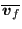
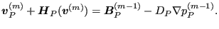
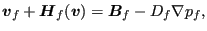
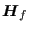
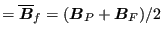
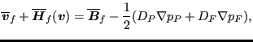
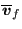
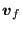

Next: Conservation of mass (compressible Up: The Finite Volume Method Previous: Volume forces Contents
Before continuing with the conservation of mass equation a new type of
interpolation has to be introduced: the Rhie-Chow interpolation. So far we
encountered for the primary variables such as velocity, static pressure or
static temperature at internal faces the mean interpolation
(e.g.
 ) and the convective interpolation
(e.g.
 ) . For external faces the
extrapolation is dictated by the kind of boundary condition (e.g. outflow:
constant extrapolation or wall/sliding condition: linear extrapolation) and
these facial values are denoted without any extra sign.
) . For external faces the
extrapolation is dictated by the kind of boundary condition (e.g. outflow:
constant extrapolation or wall/sliding condition: linear extrapolation) and
these facial values are denoted without any extra sign.
The need for the Rhie-Chow interpolation comes from the fact that for a long time CFD calculations on collocated grids (i.e. grids for which the velocity, pressure, temperature etc. are unknown at the same positions) were not successfull due to the occurrence of checkerboard-type solutions. Therefore, people resorted to staggered grids, in whch the pressure was calculated at positions halfway the velocity positions [61]. Especially in three dimensions this leads to hopelessly complicated data structures. The use of the Rhie-Chow interpolation, however, solved this problem.
The Rhie-Chow interpolation (only defined on internal faces) starts from a velocity/pressure field satisfying the conservation of momentum equation. From the last section this equation can be written as follows at element center P:
|  | (579) |
The terms correspond to:
More generically, this equation can be written for a velocity field
 and pressure field
and pressure field  satisfying the momentum equations as
follows:
satisfying the momentum equations as
follows:
and for element F:
Now we are looking for the velocity  at the face
at the face  satisfying the
momentum equation as well, i.e.
satisfying the
momentum equation as well, i.e.
|  | (582) |
where
|  | (583) | |
|  | (584) | |
| (585) |
Hence:
On the other hand. one can also just take the mean of equation (580) and (581) resulting in:
|  | (587) |
which is within second order accurary equivalent to [61]:
Subtracting Equation (588) from Equation (586) yields:
Recall that (Equation (510))
 is the corrected form of
is the corrected form of
 obtained by enforcing the short range gradient based on elements P and F, i.e.
obtained by enforcing the short range gradient based on elements P and F, i.e.
| (590) |
This is done by defining
Substituting Equation (591) into Equation (589) yields
![$\displaystyle \boldsymbol{v}_f = \overline{\boldsymbol{v} }_f - \overline{D}_f ...
...{PF}} - \overline{\nabla p}_f \cdot \boldsymbol{j}_f \right ] \boldsymbol{j}_f.$](img1828.png) |
(592) |
Whereas  is obtained through mean interpolation  is obtained by Rhie-Chow interpolation. It is a kind of improved value for the velocity by enforcing the short-range correctness of the pressure gradient.
![$\displaystyle \nabla p_f = \overline{\nabla p}_f + \left [ \frac{p_F-p_P}{l_{PF}} - \overline{\nabla p}_f \cdot \boldsymbol{j}_f \right ] \boldsymbol{j}_f.$](img1827.png)